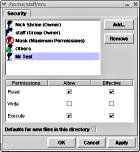
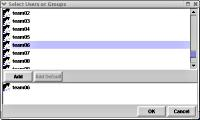

{kind=link}
{kind=link}
Contributors
Bugs/Suggestions
Please mail any bugs or suggestions to Nick Shrine at:
N.R.Shrine@cs.bham.ac.uk.

Jfacl is a GUI for editing file access control lists on Solaris and is an alternative to the somewhat complicated getfacl and setfacl commands. It is written in Java and uses JNI to make native Solaris system calls to modify the ACLs.
As you can see from the screenshots below, it is meant to look something like the file security dialog in Windows (click thumbs for full size screenshot).
|  The Main Window |
 The Add Users Window |
Jfacl requires Solaris 7 or higher (untested on earlier versions) and Java 2 Runtime 1.4.0 or higher. If you want to modify and rebuild jfacl you need Java 2 SDK 1.4.0 or higher, Apache Ant 1.4.1 or higher and GCC for the native code - I used gcc 2.95.3 (untested with other versions).
Jfacl is free to download, use, modify and redistribute under these licence terms.
Release history.
Click here to download (.tar.gz binary and sources).
Please mail any bugs or suggestions to Nick Shrine at:
N.R.Shrine@cs.bham.ac.uk.